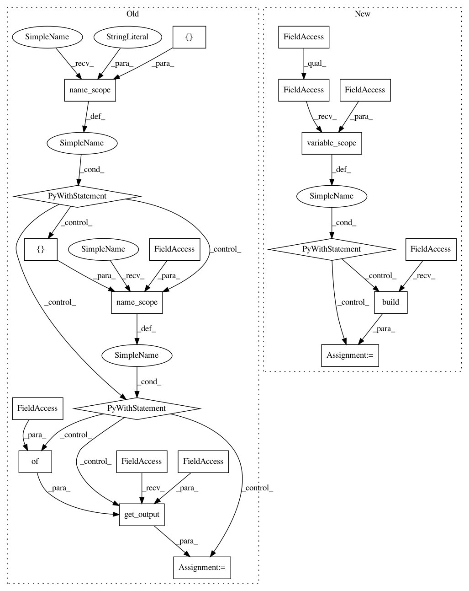

d19e9ab3b446e595c72e03fbc03684927d77526b,src/garage/tf/policies/categorical_mlp_policy.py,CategoricalMLPPolicy,dist_info_sym,#CategoricalMLPPolicy#Any#Any#Any#,73
Before Change
@overrides
def dist_info_sym(self, obs_var, state_info_vars=None, name=None):
with tf.name_scope(name, "dist_info_sym", [obs_var, state_info_vars]):
with tf.name_scope(self._prob_network_name, values=[obs_var]):
prob = L.get_output(
self._l_prob, {self._l_obs: tf.cast(obs_var, tf.float32)})
return dict(prob=prob)
@overrides
def dist_info(self, obs, state_infos=None):
return dict(prob=self._f_prob(obs))
After Change
@overrides
def dist_info_sym(self, obs_var, state_info_vars=None, name=None):
Symbolic graph of the distribution.
with tf.compat.v1.variable_scope(self._variable_scope):
prob = self.model.build(obs_var, name=name)
return dict(prob=prob)
@overrides
def dist_info(self, obs, state_infos=None):
In pattern: SUPERPATTERN
Frequency: 3
Non-data size: 21
Instances
Project Name: rlworkgroup/garage
Commit Name: d19e9ab3b446e595c72e03fbc03684927d77526b
Time: 2019-10-03
Author: utkarshjp7@gmail.com
File Name: src/garage/tf/policies/categorical_mlp_policy.py
Class Name: CategoricalMLPPolicy
Method Name: dist_info_sym
Project Name: rlworkgroup/garage
Commit Name: 7d2ec360e1704f9d13e58d97466438db71aa3059
Time: 2019-09-28
Author: zequnyu@usc.edu
File Name: src/garage/tf/regressors/categorical_mlp_regressor.py
Class Name: CategoricalMLPRegressor
Method Name: dist_info_sym
Project Name: rlworkgroup/garage
Commit Name: 7d2ec360e1704f9d13e58d97466438db71aa3059
Time: 2019-09-28
Author: zequnyu@usc.edu
File Name: src/garage/tf/regressors/categorical_mlp_regressor.py
Class Name: CategoricalMLPRegressor
Method Name: log_likelihood_sym